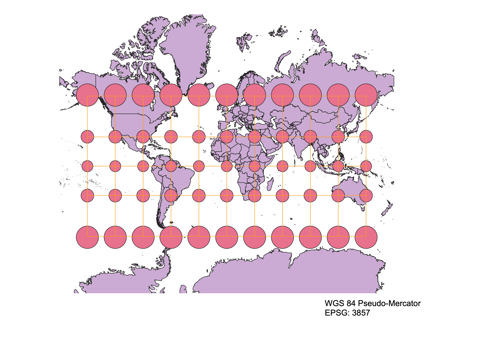
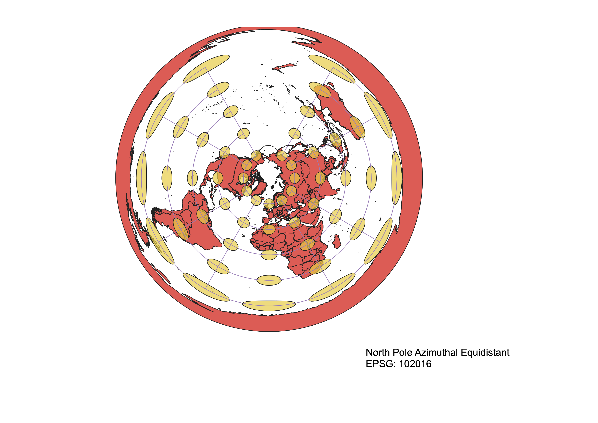
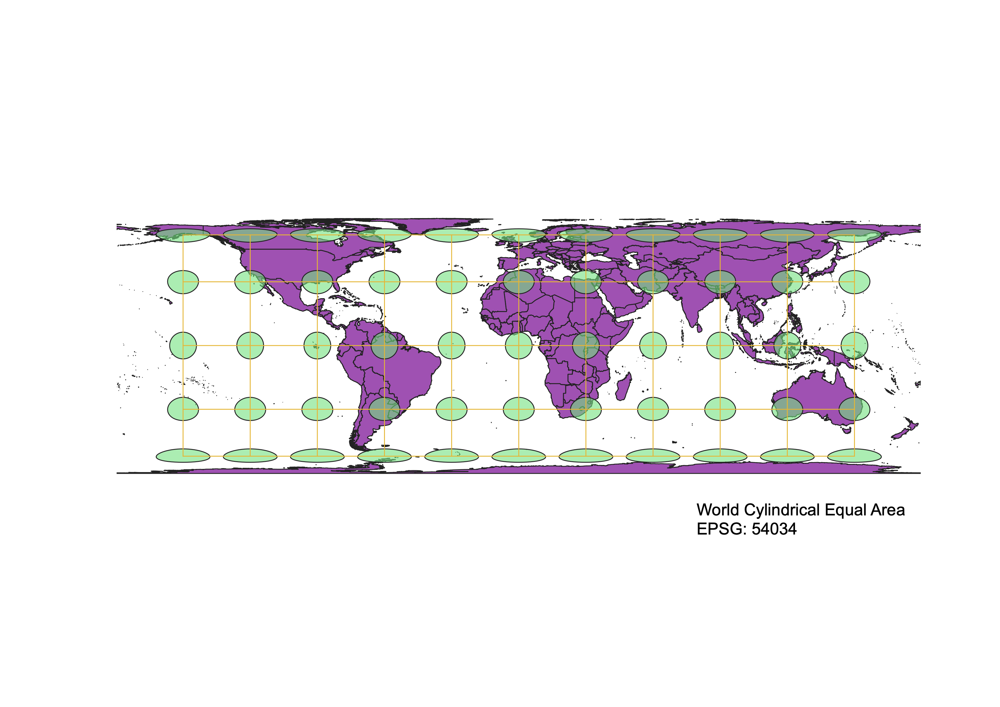
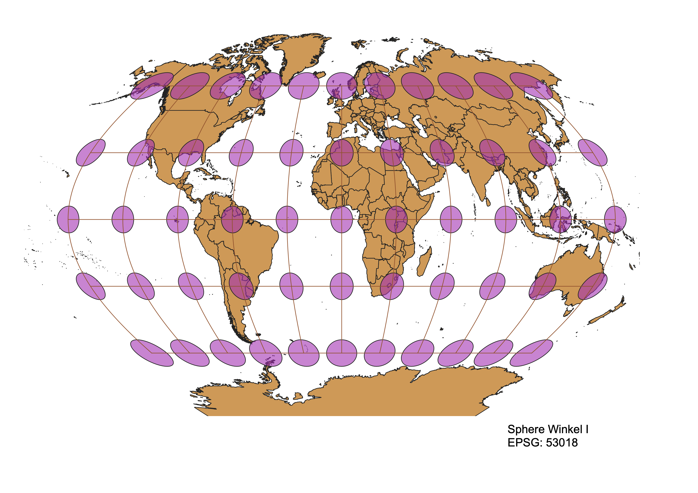

<!DOCTYPE html>
<html lang="en">
<head>
    <meta charset="UTF-8">
    <meta http-equiv="X-UA-Compatible" content="IE=edge">
    <meta name="viewport" content="width=device-width, initial-scale=1.0">
    <title>Intro to Geographic Information - TARLETON HUNT</title>
</html>
<body>

    <h1>Intro to Geographic Info (GEOG 370) Course Projects</h1>
    <h/>
    <body>

    <h2>Homework #3: World Projections</h2>
    <h3>Aitoff Projection</h3>
    
    <head>
    <body>
       <p> There is a lot of distortion as the circles near the poles and become more like ellipses. In addition, there is much distortion on the sides of the projection which gives the projection as a whole, a globe like shape.</p>

    <h3>WGS 84</h3>
    
    <br> 
    <body>
    <p>Conserves its shape, but the area is highly distorted. For example, the area of Greenland is very large compared to North America and other countries.</p>

    <h3>World Robinson</h3>
    
    <br> 
    <p>There is a distortion on the area because the circles get bigger as we move towards the poles. In addition, the cirles are becoming more like ellipses as they near the poles.<p>


    <h3>WGS 84 Pseudo-Mercator</h3>
    
    <br> 
    <body>
    <p>The area in the south is stretched. In addition. Greenland is very large compared to Africa. The circles mantain their shape and are fairly small but get bigger as they near the poles.</p>


    <h3>North Pole Azimuthal Equidistant</h3>
    
    <br>  
    <p>The center of focus is mainly at the north pole. In the center of the projection, the circles are small and maintain their shape, but as the area gets wider, the circles become distorted and long ellipses.</p>


    <h3>World Cylindrical Equal Area</h3>
    
    <br>  
    <p>The area is stretched and compressed, especially near the poles. In addition, there is much distortion as the circles near the poles and become ellipses.</p>


    <h3>Sphere Winkel I</h3>
    
    <br> 
    <p>The area is somewhat shaped like a sphere. The circles are elongated into ellipses as they stretch along the outer part of the projection.


    <h2>Data used for this project:</h2>
    <a href="./ne_10m_admin_0_countries/" download>Natural Earth Vector </a>

    </body>
    </html>